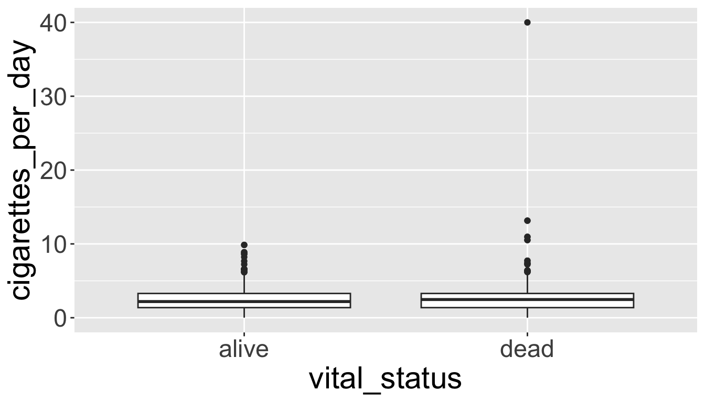
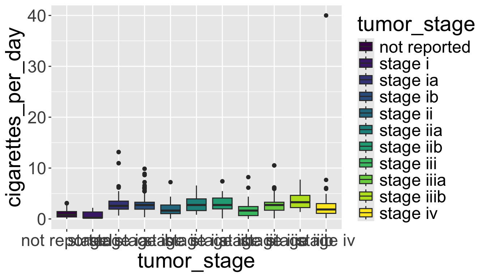

# load the first tab smoke_complete
smoke_complete <- read_excel(
here("part3", "data", "smoke_complete.xlsx"),
sheet = 1,
na = "NA"
)
# Remove some columns for easier viewing - we'll talk about the select function later
smoke_complete <- smoke_complete %>%
select(age_at_diagnosis,
tumor_stage,
cigarettes_per_day,
gender,
vital_status,
disease)3: Data Visualization and Data Manipulation
BSTA 526: R Programming for Health Data Science
Meike Niederhausen, PhD & Jessica Minnier, PhD
OHSU-PSU School of Public Health
2026-01-22
1 Welcome to R Programming: Part 3!
In this session, we will cover the basics of data wrangling with dplyr functions and some options for customizing ggplots.
Before you get started:
Remember to save this notebook under a new name, such as
part_03_b526_YOURNAME.qmd.
1.1 Learning Objectives
By the end of this session, you should be able to:
- Learn about errors and warnings and where to ask for help
- Become more confident with file management and uploading data
- Sort by a variable in a dataset using
arrange() - Select variables in a dataset using
select() - Filter a dataset using the
filter()function - Create and modify scatterplots and boxplots
- Split figures into multiple panels using
facet_wrap() - Customize your plots using built in
theme()s
2 Getting Help on Errors
2.1 Understanding the difference between warnings and errors
- A warning is an indication that the data or arguments isn’t quite what the function expected.
- You can usually run the code, but you should be careful about it and verify the output.
- An error means that the code can’t run at all given what you have given the function.
- Errors can be difficult to understand, which is why…
2.2 Googling is StandaRd pRactice foR eRRors
The first thing I do when I encounter an error that I don’t understand is to search the internet for the error.
There are some resources that I especially check (in order):
- Search “question + rcran” (i.e “hist rcran” or “make a boxplot ggplot”)
- Search error in quotes (i.e. “Evaluation error: invalid type (closure) for variable ’***’“)
- AI: such as Claude, Perplexity, chatgpt, etc.
- More advanced/specific searches
- Posit/Rstudio Community (for
tidyverse): https://forum.posit.co/ - Stack Overflow #r tag
- Biostars (for Bioinformatics): https://www.biostars.org/
- The package’s github page (especially issues)
- Advanced search github for your function name to see examples or search the error
- Posit/Rstudio Community (for
2.3 How to find examples and information on function arguments
- Read the vignettes! (or user guide if there is one)
- Read the help documentation (sometimes not that useful)
- Look at cheatsheets: https://posit.co/resources/cheatsheets/
- Search the internet as above, or use AI.
3 Revisiting data loading and file management
Useful resources from last time:
readxlintro vignette: https://readxl.tidyverse.org/- Data import cheatsheet.
3.1 Challenge 1 (10 minutes)
- Create a new .qmd file and name it
smoke_messy.qmd. Save it in the “part3” folder. - Load data from the file
data/smoke_complete.xlsxfrom the second tab/sheet “smoke_messy” using theread_excel()function and the appropriate arguments. Remember to look at the data first! Remember to load your packages! Name the datasmoke_messy. - Use
glimpseandViewto view your data and observe the column names and column types, making sure numeric columns are numeric (classdbl).
Discussion questions
- What tenets of the paper “Data Organization in Spreadsheets” are broken here?
- What has been the hardest part about loading data in R for you?
4 Data Manipulation using dplyr
- We’re going to start off our data work with some data manipulation using the tidyverse package:
dplyr. dplyris your all-purpose toolbox for filtering, summarizing, and transforming data.
4.1 Common dplyr “verbs”
dplyr uses common verbs to wrangle data
Examples:
arrange()- sorts a dataset by a variablefilter()- subsets a dataset by criteriaselect()- returns only a few columns from a datasetgroup_by()/summarize()- summarizes a dataset, such as counting frequencies and calculating meansmutate()- transforms variables in a dataset
%>%- the pipe function lets us join “verbs” together in a sequence of operations that transform a dataset.
4.2 Getting set up: load the smoke_complete dataset
5 Introducing the pipe (%>% or |>)
5.1 Connect multiple operations with %>%
- Often we want to do multiple operations on our data and in a specific order.
- For example, I might want to do the following:
- Take my dataset
smoke_completeand then - Sort it by
cigarettes_per_dayand then - filter to have only
malesfrom the data.
- Take my dataset
The pipe (%>%) function acts like the “and then”:
# Take my dataset smoke complete **and then**
smoke_complete %>%
# sort it by cigarettes_per day **and then**
arrange(cigarettes_per_day) %>%
# filter it to only have males
filter(gender == "male")# A tibble: 786 × 6
age_at_diagnosis tumor_stage cigarettes_per_day gender vital_status disease
<dbl> <chr> <dbl> <chr> <chr> <chr>
1 18051 stage iii 0.00822 male dead BLCA
2 29288 stage iii 0.0548 male dead BLCA
3 18983 stage ii 0.0822 male dead BLCA
4 22632 stage iiia 0.110 male dead LUSC
5 22632 stage iiia 0.110 male dead LUSC
6 20632 stage iib 0.110 male alive LUSC
7 20632 stage iib 0.110 male alive LUSC
8 25579 stage iii 0.110 male dead BLCA
9 23156 stage i 0.137 male dead LUSC
10 23156 stage i 0.137 male dead LUSC
# ℹ 776 more rows5.2 %>%: output of one step is the input of another
- You can think of a pipe as putting the output of one step as an input of another.
- These two statements are equivalent:
# A tibble: 1,152 × 6
age_at_diagnosis tumor_stage cigarettes_per_day gender vital_status disease
<dbl> <chr> <dbl> <chr> <chr> <chr>
1 18051 stage iii 0.00822 male dead BLCA
2 19847 not reported 0.0110 female alive CESC
3 14225 not reported 0.0219 female dead CESC
4 31258 not reported 0.0312 female alive CESC
5 27449 stage ii 0.0548 female dead LUSC
6 27449 stage ii 0.0548 female dead LUSC
7 16429 stage iii 0.0548 female dead LUSC
8 16429 stage iii 0.0548 female dead LUSC
9 15965 not reported 0.0548 female alive CESC
10 17465 not reported 0.0548 female dead CESC
# ℹ 1,142 more rowsand
# A tibble: 1,152 × 6
age_at_diagnosis tumor_stage cigarettes_per_day gender vital_status disease
<dbl> <chr> <dbl> <chr> <chr> <chr>
1 18051 stage iii 0.00822 male dead BLCA
2 19847 not reported 0.0110 female alive CESC
3 14225 not reported 0.0219 female dead CESC
4 31258 not reported 0.0312 female alive CESC
5 27449 stage ii 0.0548 female dead LUSC
6 27449 stage ii 0.0548 female dead LUSC
7 16429 stage iii 0.0548 female dead LUSC
8 16429 stage iii 0.0548 female dead LUSC
9 15965 not reported 0.0548 female alive CESC
10 17465 not reported 0.0548 female dead CESC
# ℹ 1,142 more rows5.3 Why pipes?
- Pipes make it easier to put together commands.
- Without pipes, I’d have to do the following:
# A tibble: 786 × 6
age_at_diagnosis tumor_stage cigarettes_per_day gender vital_status disease
<dbl> <chr> <dbl> <chr> <chr> <chr>
1 18051 stage iii 0.00822 male dead BLCA
2 29288 stage iii 0.0548 male dead BLCA
3 18983 stage ii 0.0822 male dead BLCA
4 22632 stage iiia 0.110 male dead LUSC
5 22632 stage iiia 0.110 male dead LUSC
6 20632 stage iib 0.110 male alive LUSC
7 20632 stage iib 0.110 male alive LUSC
8 25579 stage iii 0.110 male dead BLCA
9 23156 stage i 0.137 male dead LUSC
10 23156 stage i 0.137 male dead LUSC
# ℹ 776 more rows- You can see that as you add more and more verbs, it gets more and more complicated.
- We end up with very very nested parentheses. Or, many steps like this:
That’s what pipes are supposed to save us from.
5.4 One Step at a Time
- One big advantage of the pipe is that you can build your processing line by line.
- In practice, as I work, I will often pipe things into
View()to confirm I did things correctly:
- This is a good way to work. By building each step and verifying that the output is correct, we can build really long sequence of processing.
- Even better is to include checks in your code to verify that your work is correct.
IMPORTANT POINT:
- The code above has not saved our work.
- The data frame object has not changed, the excel file has not changed.
- To save your data frame after wrangling/cleaning/arranging it, save it as the same or another object:
5.5 The difference between + and %>%
- Remember
- that
+is forggplot2and - that
%>%is fordplyr.
- that
- To keep them distinct and avoid confusion, I recommend keeping data processing and plotting steps separate.
- You can chain them, but it can get confusing
5.6 Base R pipe |>
- R version 4.1.0 introduced the “native” pipe operator
|>- that comes as part of the R syntax without the need for loading additional packages (i.e. the tidyverse).
- Learn more about this at the Tidyverse website and the pipe section of R for Data Science.
You really just need to know that
The behaviour of the native pipe is by and large the same as that of the %>% pipe provided by the magrittr package. Both operators (|> and %>%) let you “pipe” an object forward to a function or call expression, thereby allowing you to express a sequence of operations that transform an object…there’s no need to commit entirely to one pipe or the other — you can use the base pipe for the majority of cases where it’s sufficient and use the magrittr pipe when you really need its special features - From the Tidyverse website
It’s fine to use either one. You will come across both of them in code that you see, so you should be aware.
- You can change your RStudio app options to use
|>instead of%>%if you like:- Tools -> Global Options -> Code -> select Use native pipe operator
6 Row wrangling
arrange()filter()&,|,!
6.1 Sorting data frames using arrange()
arrange()is a function that lets us sort a dataset by a specified variableBy default, it sorts in ascending order:
# A tibble: 1,152 × 6
age_at_diagnosis tumor_stage cigarettes_per_day gender vital_status disease
<dbl> <chr> <dbl> <chr> <chr> <chr>
1 18051 stage iii 0.00822 male dead BLCA
2 19847 not reported 0.0110 female alive CESC
3 14225 not reported 0.0219 female dead CESC
4 31258 not reported 0.0312 female alive CESC
5 27449 stage ii 0.0548 female dead LUSC
6 27449 stage ii 0.0548 female dead LUSC
7 16429 stage iii 0.0548 female dead LUSC
8 16429 stage iii 0.0548 female dead LUSC
9 15965 not reported 0.0548 female alive CESC
10 17465 not reported 0.0548 female dead CESC
# ℹ 1,142 more rows- To sort by descending order, you need to wrap the variable in the
desc()function:
# A tibble: 1,152 × 6
age_at_diagnosis tumor_stage cigarettes_per_day gender vital_status disease
<dbl> <chr> <dbl> <chr> <chr> <chr>
1 17635 stage iv 40 male dead BLCA
2 27708 stage ia 13.2 male dead LUSC
3 27708 stage ia 13.2 male dead LUSC
4 24477 stage ia 11.0 male dead LUSC
5 24477 stage ia 11.0 male dead LUSC
6 24713 stage iiia 10.5 male dead LUSC
7 24713 stage iiia 10.5 male dead LUSC
8 25646 stage ib 9.86 male alive LUSC
9 25646 stage ib 9.86 male alive LUSC
10 25506 stage ib 8.88 male alive LUSC
# ℹ 1,142 more rows- You can also arrange by multiple variables.
# A tibble: 1,152 × 6
age_at_diagnosis tumor_stage cigarettes_per_day gender vital_status disease
<dbl> <chr> <dbl> <chr> <chr> <chr>
1 17635 stage iv 40 male dead BLCA
2 27708 stage ia 13.2 male dead LUSC
3 27708 stage ia 13.2 male dead LUSC
4 24477 stage ia 11.0 male dead LUSC
5 24477 stage ia 11.0 male dead LUSC
6 24713 stage iiia 10.5 male dead LUSC
7 24713 stage iiia 10.5 male dead LUSC
8 25646 stage ib 9.86 male alive LUSC
9 25646 stage ib 9.86 male alive LUSC
10 25506 stage ib 8.88 male alive LUSC
# ℹ 1,142 more rows- Note that order of variables in
arrange()matters!
# A tibble: 1,152 × 6
age_at_diagnosis tumor_stage cigarettes_per_day gender vital_status disease
<dbl> <chr> <dbl> <chr> <chr> <chr>
1 25220 not reported 3.12 female alive CESC
2 28873 not reported 3.07 female dead CESC
3 18773 not reported 2.90 female alive CESC
4 16231 not reported 2.85 female dead CESC
5 24059 not reported 2.74 female dead CESC
6 20302 not reported 2.74 female alive CESC
7 28826 not reported 2.47 male dead LUSC
8 28826 not reported 2.47 male dead LUSC
9 21520 not reported 2.19 female dead CESC
10 20207 not reported 2.19 female alive CESC
# ℹ 1,142 more rows6.2 (Mini) Challenge 2
Use arrange() to sort by disease and descending by tumor_stage.
# A tibble: 1,152 × 6
age_at_diagnosis tumor_stage cigarettes_per_day gender vital_status disease
<dbl> <chr> <dbl> <chr> <chr> <chr>
1 18051 stage iii 0.00822 male dead BLCA
2 19847 not reported 0.0110 female alive CESC
3 14225 not reported 0.0219 female dead CESC
4 31258 not reported 0.0312 female alive CESC
5 27449 stage ii 0.0548 female dead LUSC
6 27449 stage ii 0.0548 female dead LUSC
7 16429 stage iii 0.0548 female dead LUSC
8 16429 stage iii 0.0548 female dead LUSC
9 15965 not reported 0.0548 female alive CESC
10 17465 not reported 0.0548 female dead CESC
# ℹ 1,142 more rows6.3 filter()ing our data
filter()lets us subset our data according to specific criteria.- Let’s filter on the
numericvariablecigarettes_per_day:
# A tibble: 1,151 × 6
age_at_diagnosis tumor_stage cigarettes_per_day gender vital_status disease
<dbl> <chr> <dbl> <chr> <chr> <chr>
1 18051 stage iii 0.00822 male dead BLCA
2 19847 not reported 0.0110 female alive CESC
3 14225 not reported 0.0219 female dead CESC
4 31258 not reported 0.0312 female alive CESC
5 27449 stage ii 0.0548 female dead LUSC
6 27449 stage ii 0.0548 female dead LUSC
7 16429 stage iii 0.0548 female dead LUSC
8 16429 stage iii 0.0548 female dead LUSC
9 15965 not reported 0.0548 female alive CESC
10 17465 not reported 0.0548 female dead CESC
# ℹ 1,141 more rows- We can also filter categorical variables.
- This requires us to know the values (levels) of the categorical variable. More on this in a bit…
# A tibble: 91 × 6
age_at_diagnosis tumor_stage cigarettes_per_day gender vital_status disease
<dbl> <chr> <dbl> <chr> <chr> <chr>
1 21491 stage iv 0.164 male dead BLCA
2 28082 stage iv 0.219 male alive BLCA
3 24267 stage iv 0.219 male dead BLCA
4 28470 stage iv 0.274 male alive BLCA
5 23538 stage iv 0.384 female alive BLCA
6 22122 stage iv 0.438 female alive BLCA
7 30205 stage iv 0.534 male dead BLCA
8 26893 stage iv 0.548 male dead BLCA
9 27496 stage iv 0.548 female dead BLCA
10 27397 stage iv 0.548 female dead BLCA
# ℹ 81 more rows- We can also combine different filtering conditions:
# A tibble: 90 × 6
age_at_diagnosis tumor_stage cigarettes_per_day gender vital_status disease
<dbl> <chr> <dbl> <chr> <chr> <chr>
1 21491 stage iv 0.164 male dead BLCA
2 28082 stage iv 0.219 male alive BLCA
3 24267 stage iv 0.219 male dead BLCA
4 28470 stage iv 0.274 male alive BLCA
5 23538 stage iv 0.384 female alive BLCA
6 22122 stage iv 0.438 female alive BLCA
7 30205 stage iv 0.534 male dead BLCA
8 26893 stage iv 0.548 male dead BLCA
9 27496 stage iv 0.548 female dead BLCA
10 27397 stage iv 0.548 female dead BLCA
# ℹ 80 more rows- Using a comma requires BOTH conditions to be true.
- In other words, in logic this is equivalent to using “and”. More on this next.
6.4 Filtering requires a little logic
- We can chain multiple criteria using differnt operators:
,(AND)&(AND)|(OR)
- But we need to review a little logic before we do this.
- If we want to restrict to patients who were
maleandstage iv,- we would use an
&to chain these criteria together:
# A tibble: 75 × 6
age_at_diagnosis tumor_stage cigarettes_per_day gender vital_status disease
<dbl> <chr> <dbl> <chr> <chr> <chr>
1 21491 stage iv 0.164 male dead BLCA
2 28082 stage iv 0.219 male alive BLCA
3 24267 stage iv 0.219 male dead BLCA
4 28470 stage iv 0.274 male alive BLCA
5 30205 stage iv 0.534 male dead BLCA
6 26893 stage iv 0.548 male dead BLCA
7 30674 stage iv 0.658 male dead BLCA
8 27049 stage iv 0.767 male alive BLCA
9 21233 stage iv 0.822 male alive BLCA
10 20420 stage iv 0.822 male alive BLCA
# ℹ 65 more rows- Note that we could also use the comma in this case, as above:
# A tibble: 75 × 6
age_at_diagnosis tumor_stage cigarettes_per_day gender vital_status disease
<dbl> <chr> <dbl> <chr> <chr> <chr>
1 21491 stage iv 0.164 male dead BLCA
2 28082 stage iv 0.219 male alive BLCA
3 24267 stage iv 0.219 male dead BLCA
4 28470 stage iv 0.274 male alive BLCA
5 30205 stage iv 0.534 male dead BLCA
6 26893 stage iv 0.548 male dead BLCA
7 30674 stage iv 0.658 male dead BLCA
8 27049 stage iv 0.767 male alive BLCA
9 21233 stage iv 0.822 male alive BLCA
10 20420 stage iv 0.822 male alive BLCA
# ℹ 65 more rows- If we want to restrict to patients who were
maleorstage iv,- we would use an
|to chain these criteria together.
# A tibble: 802 × 6
age_at_diagnosis tumor_stage cigarettes_per_day gender vital_status disease
<dbl> <chr> <dbl> <chr> <chr> <chr>
1 18051 stage iii 0.00822 male dead BLCA
2 29288 stage iii 0.0548 male dead BLCA
3 18983 stage ii 0.0822 male dead BLCA
4 22632 stage iiia 0.110 male dead LUSC
5 22632 stage iiia 0.110 male dead LUSC
6 20632 stage iib 0.110 male alive LUSC
7 20632 stage iib 0.110 male alive LUSC
8 25579 stage iii 0.110 male dead BLCA
9 23156 stage i 0.137 male dead LUSC
10 23156 stage i 0.137 male dead LUSC
# ℹ 792 more rowsThink about it: which of the above two code blocks will return a larger number of patients?
6.5 != NOT EQUAL
- We can also negate operators.
!=means NOT EQUAL
# A tibble: 366 × 6
age_at_diagnosis tumor_stage cigarettes_per_day gender vital_status disease
<dbl> <chr> <dbl> <chr> <chr> <chr>
1 19847 not reported 0.0110 female alive CESC
2 14225 not reported 0.0219 female dead CESC
3 31258 not reported 0.0312 female alive CESC
4 27449 stage ii 0.0548 female dead LUSC
5 27449 stage ii 0.0548 female dead LUSC
6 16429 stage iii 0.0548 female dead LUSC
7 16429 stage iii 0.0548 female dead LUSC
8 15965 not reported 0.0548 female alive CESC
9 17465 not reported 0.0548 female dead CESC
10 15849 not reported 0.0548 female alive CESC
# ℹ 356 more rows- Or, we can negate a whole statement:
# A tibble: 366 × 6
age_at_diagnosis tumor_stage cigarettes_per_day gender vital_status disease
<dbl> <chr> <dbl> <chr> <chr> <chr>
1 19847 not reported 0.0110 female alive CESC
2 14225 not reported 0.0219 female dead CESC
3 31258 not reported 0.0312 female alive CESC
4 27449 stage ii 0.0548 female dead LUSC
5 27449 stage ii 0.0548 female dead LUSC
6 16429 stage iii 0.0548 female dead LUSC
7 16429 stage iii 0.0548 female dead LUSC
8 15965 not reported 0.0548 female alive CESC
9 17465 not reported 0.0548 female dead CESC
10 15849 not reported 0.0548 female alive CESC
# ℹ 356 more rows- We can get a little complex.
- What does the code below do?
- What do you think
%in%does?
# A tibble: 830 × 6
age_at_diagnosis tumor_stage cigarettes_per_day gender vital_status disease
<dbl> <chr> <dbl> <chr> <chr> <chr>
1 27449 stage ii 0.0548 female dead LUSC
2 27449 stage ii 0.0548 female dead LUSC
3 16429 stage iii 0.0548 female dead LUSC
4 16429 stage iii 0.0548 female dead LUSC
5 22632 stage iiia 0.110 male dead LUSC
6 22632 stage iiia 0.110 male dead LUSC
7 20632 stage iib 0.110 male alive LUSC
8 20632 stage iib 0.110 male alive LUSC
9 23156 stage i 0.137 male dead LUSC
10 23156 stage i 0.137 male dead LUSC
# ℹ 820 more rows6.6 More filter examples
6.7 How to check what values exist in a categorical variable
- We’ve already seen both
skim()andglimpse()can give us an idea of what values exist in a categorical variable. - We can use
distinct()to grab all of the unique values for a categorical variable,- and then use
arrange()to sort them.
- and then use
# A tibble: 11 × 1
tumor_stage
<chr>
1 not reported
2 stage i
3 stage ia
4 stage ib
5 stage ii
6 stage iia
7 stage iib
8 stage iii
9 stage iiia
10 stage iiib
11 stage iv This can also alert us if there are categorical coding mistakes (such as misspellings) in our data.
Another tidy way to do this is to use the
tabyl()function from thejanitorpackage:
# library(janitor) # already loaded above, but just a heads up this function tabyl is from the janitor package
smoke_complete %>%
tabyl(tumor_stage) tumor_stage n percent
not reported 99 0.085937500
stage i 7 0.006076389
stage ia 146 0.126736111
stage ib 266 0.230902778
stage ii 65 0.056423611
stage iia 112 0.097222222
stage iib 148 0.128472222
stage iii 86 0.074652778
stage iiia 102 0.088541667
stage iiib 30 0.026041667
stage iv 91 0.078993056- We’ll learn about more
tabyl()options later in the term.
6.8 (Mini) Challenge 3
- Use
filter()to restrict to patients fromsmoke_completewho have- disease == “LUSC” and
- who smoke less than 1
cigarettes_per_day.
- How many rows are left?
# A tibble: 1,152 × 6
age_at_diagnosis tumor_stage cigarettes_per_day gender vital_status disease
<dbl> <chr> <dbl> <chr> <chr> <chr>
1 18051 stage iii 0.00822 male dead BLCA
2 19847 not reported 0.0110 female alive CESC
3 14225 not reported 0.0219 female dead CESC
4 31258 not reported 0.0312 female alive CESC
5 27449 stage ii 0.0548 female dead LUSC
6 27449 stage ii 0.0548 female dead LUSC
7 16429 stage iii 0.0548 female dead LUSC
8 16429 stage iii 0.0548 female dead LUSC
9 15965 not reported 0.0548 female alive CESC
10 17465 not reported 0.0548 female dead CESC
# ℹ 1,142 more rows6.9 More about comparison and logical operators
This is a useful reference for all the different operators (both logical and comparison) that you can use: https://www.datamentor.io/r-programming/operator/
From R4DS (class textbook) section 12.3 on Boolean algebra:

7 Column wrangling
select()tidyselecthelpers
7.1 Selecting columns using select()
select()allows us to select variables from our dataset
- We can also select multiple consecutive columns with
:
- To select everything except some variables,
- use a
-or!in front of the variables.
- use a
[1] "age_at_diagnosis" "tumor_stage" "cigarettes_per_day"
[4] "vital_status" "disease" [1] "age_at_diagnosis" "tumor_stage" "cigarettes_per_day"
[4] "vital_status" [1] "age_at_diagnosis" "tumor_stage" "cigarettes_per_day"
[4] "vital_status" "disease" [1] "age_at_diagnosis" "tumor_stage" "cigarettes_per_day"
[4] "vital_status" 7.2 tidyselect helpers
- There are ways to select column names by “searching” them.
- These are called the
tidyselecthelpers. You can see examples here.
- For instance, it might be useful (though not really in our case, although it would be with the
brca_clinicaldata from last week), to select all columns where the column name includes the word “day”:
# A tibble: 1,152 × 1
vital_status
<chr>
1 dead
2 alive
3 dead
4 alive
5 dead
6 dead
7 dead
8 dead
9 alive
10 dead
# ℹ 1,142 more rows# A tibble: 1,152 × 2
age_at_diagnosis vital_status
<dbl> <chr>
1 18051 dead
2 19847 alive
3 14225 dead
4 31258 alive
5 27449 dead
6 27449 dead
7 16429 dead
8 16429 dead
9 15965 alive
10 17465 dead
# ℹ 1,142 more rowsJust the last column:
This is one useful shortcut (though use with caution, you need to know your column names and order):
# A tibble: 1,152 × 4
age_at_diagnosis tumor_stage cigarettes_per_day vital_status
<dbl> <chr> <dbl> <chr>
1 18051 stage iii 0.00822 dead
2 19847 not reported 0.0110 alive
3 14225 not reported 0.0219 dead
4 31258 not reported 0.0312 alive
5 27449 stage ii 0.0548 dead
6 27449 stage ii 0.0548 dead
7 16429 stage iii 0.0548 dead
8 16429 stage iii 0.0548 dead
9 15965 not reported 0.0548 alive
10 17465 not reported 0.0548 dead
# ℹ 1,142 more rows- You might also have a character vector of column names that you want to pull out.
- Let’s say you have one saved:
# A tibble: 1,152 × 3
disease tumor_stage vital_status
<chr> <chr> <chr>
1 BLCA stage iii dead
2 CESC not reported alive
3 CESC not reported dead
4 CESC not reported alive
5 LUSC stage ii dead
6 LUSC stage ii dead
7 LUSC stage iii dead
8 LUSC stage iii dead
9 CESC not reported alive
10 CESC not reported dead
# ℹ 1,142 more rows- There is a similar function
all_ofwhich fails if the column name is missing:
7.3 Rearranging the order of columns
7.3.1 With select() and everything()
everything()is useful for some quick rearranging of columns- Below we move
tumor_stageanddiseaseto the beginning of the dataset:
[1] "age_at_diagnosis" "tumor_stage" "cigarettes_per_day"
[4] "gender" "vital_status" "disease" [1] "tumor_stage" "disease" "age_at_diagnosis"
[4] "cigarettes_per_day" "gender" "vital_status" 7.3.2 With relocate()
[1] "tumor_stage" "disease" "age_at_diagnosis"
[4] "cigarettes_per_day" "gender" "vital_status" 7.3.3 .after and .before
[1] "tumor_stage" "age_at_diagnosis" "cigarettes_per_day"
[4] "gender" "vital_status" "disease" [1] "age_at_diagnosis" "tumor_stage" "cigarettes_per_day"
[4] "gender" "vital_status" "disease" [1] "age_at_diagnosis" "tumor_stage" "cigarettes_per_day"
[4] "gender" "vital_status" "disease" 7.4 More tidyselect examples
See some more examples in this slide
For more info and learning about tidyselect, run this code in your console: (just the first 2 sections on tidyselect)
7.5 The difference between filter() and select()
- One thing to keep in mind is that:
filter()works on rows (think FILTER in Excel!), andselect()works on columns (select your relevant variables)
Keep that in mind!
7.6 Saving our results
- Let’s save our processed data into the
data/folder. - We’ll save it as a
csvfile, which is short for comma separated value.- This is a file type that can be easily imported into Excel.
- If you want to save it as an Excel file, you can use a function in the
writexlpackage:
7.7 Challenge 4 (10+ minutes)
Go back to your smoke_messy.qmd file.
Using the messy smoke_messy data, write code to do these data cleaning steps:
- Use
clean_names()from the janitor package to clean up the column names. Read the help documentation if you’ve never seen this. - Use
remove_empty()from the janitor package to remove empty columns and rows. - Use
fill()to fill in tumor stage values. (Read the example code in?fillto see how to use it, you do need to specify arguments here). - Remove the “Notes” column.
- Save the resulting data frame as a
.csvfile usingwrite_excel_csv()in thedata/folder. Remember to usehere().
7.8 Further Reading about dplyr
Please refer to this week’s readings for more reading about dplyr.
8 Customizing ggplots
8.1 Customizing a Scatterplot
Now that we have the data formatted nicely, we can start creating and customizing a figure.
8.2 Changing visual properties using built in themes
- Adding (layering) a theme will change the settings of many visual aspects of the plot.
- There are many different themes.
- A nice simple one is
theme_minimal()which comes with theggplot2package:
8.3 More themes
- A complete list of themes included with
ggplot2is available here, and- we’ll cover ways to customize our own themes later in this lesson.
- Other packages have additional themes, such ass
ggthemes:
8.4 Using theme() to customize
- Adding the
theme()function lets us customize our plot further. - Most of these settings are set within one of the built in themes,
- so if you want to overwrite what is in the theme,
- you’ll need to set these settings after setting the theme, by adding them in order.
There are a few arguments that are really helpful to modify:
axis.titleaxis.title.x(label for the x-axis)axis.title.y(label for the y-axis)legend.position(Placing the legend, including removing it)
and many more. You can read this (in progress) chapter in the ggplot2 book about themes to see more examples.
8.5 Saving your work
- After you’re satisfied with a plot, it’s likely you’d want to share it with other people or include in a manuscript or report.
This automatically saves the last plot for which code was run in your root directory.
This command interprets the file format for export using the file suffix you specify.
The other arguments dictate the size (
widthandheight) and resolution (dpi).You can specify a different directory!
8.6 Boxplots
- Boxplots compare the distribution of a quantitative variable among categories.
- Remember,
vital_statusis acharactervector, but we’re not too worried about the implicit order of the categories, so we can use it as is in our boxplot.
# creating a boxplot
ggplot(smoke_complete,
aes(x = vital_status,
y = cigarettes_per_day)) +
geom_boxplot() 
- The main differences from the scatterplots we created earlier are the
geomtype and the variables plotted.
8.7 Change colors
- We can change the color of boxplots similarly to scatterplots.
- However, we map to
filland notcolor:
Challenge: change fill to color and/or add a map to color.
8.8 fill or color scales
- Similar to themes, there are built in color palettes you can use to change the colors in your plot.
- You can also do this manually.
Here is the default fill scale:
- The functions that change the fill start with
scale_such as this colorblind friendly scale in the ggthemes package. - However, it runs out of colors! So be careful with these.
- A useful also colorblind friendly palate is the viridis palette built into ggplot2.
- Read more about it, and the other palettes built in in the viridis package vignette.
# adding color
ggplot(smoke_complete,
aes(x = tumor_stage,
y = cigarettes_per_day,
fill = tumor_stage)) +
geom_boxplot() +
scale_fill_viridis_d()
- There are several you can use here:
8.9 Faceting our boxplot
- One of the most powerful ways to change a visualization is by faceting.
- We can make multiple plots using another categorical variable.
- To do this, we have to add the
facet_wrap()command to our plot.- We need to specify the variable to
facet_wrapby using thevars()function to specify it as a variable.
- We need to specify the variable to
# adding color
ggplot(smoke_complete,
aes(x = vital_status,
y = cigarettes_per_day,
fill = vital_status)) +
geom_boxplot() +
ylim(c(0,20)) + # just to see the boxes better
facet_wrap(vars(disease))
Don’t try to facet on a
numericvariable - it won’t work.Don’t forget to look at the help documentation (e.g.,
?facet_wrap) to learn more about additional ways to customize your plots!
8.10 (Mini) Challenge 5
- Facet the boxplot by
gender. Don’t forgetvars()
8.11 facet_grid()
- Another way to facet our plots is with
facet_grid(),- which lets us select both rows and columns based on categorical variables:
8.12 Challenge 6 (10 minutes)
- Create a boxplot of age at diagnosis (in years) stratified by tumor status. Make the y-axis tumor stage.
- Map fill to tumor stage.
- Use the minimal theme.
- Use facet grid to facet on disease (rows) and vital status (cols).
- Set arguments in
facet_gridto have scales and space set to “free_y”. - Change axis labels to look nicer, and change fill scale to another scale.
8.13 Further ggplot learning
If you are interested in learning more about ggplot:
- Documentation for all
ggplotfeatures is available here. - RStudio also publishes a ggplot cheat sheet that is really handy!
- Note: this is for version 3 of ggplot
- Customizing ggplot2 Cheatsheet is also handy, because it organizes ggplot2 commands by task.
- Note: this is for version 2 of ggplot
- New
ggplotoptions with the latest version 4 released in September 2025
9 What you learned today
- Pipes (
%>%) arrange()filter()select()- Customizing
ggplotsusingtheme() - Making boxplots
- Intro to using scales in
ggplot2(more to come) - Faceting plots
10 Post Class Survey
Please fill out the post-class survey.
Your responses are anonymous in that I separate your names from the survey answers before compiling/reading.
You may want to review previous years’ feedback here.
11 Acknowledgements
- Part 3 is based on the BSTA 504 Winter 2023 course, taught by Jessica Minnier.
- I made modifications to update the material from RMarkdown to Quarto, and streamlined/edited content for slides.
- Added: relocate, ! for not selecting columns, ggplot v. 4 resource
- Minnier’s Acknowledgements:
- This notebook was adapted from material from Kate Hertweck and https://fredhutch.io and from the R-Bootcamp by Ted Laderas and Jessica Minnier, as well as the “Data Wrangling in R with the Tidyverse” and “Data Visualization with R and ggplot2” OCTRI-BERD workshops by Jessica & Meike Niederhausen.